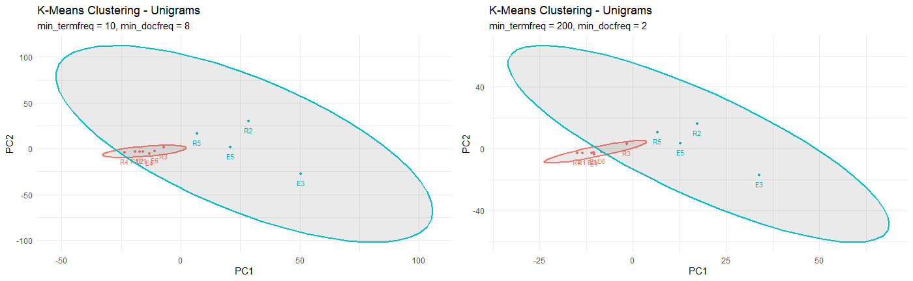
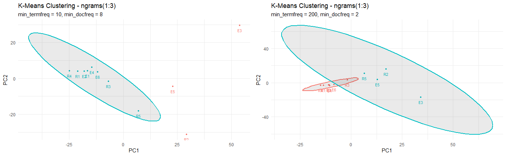
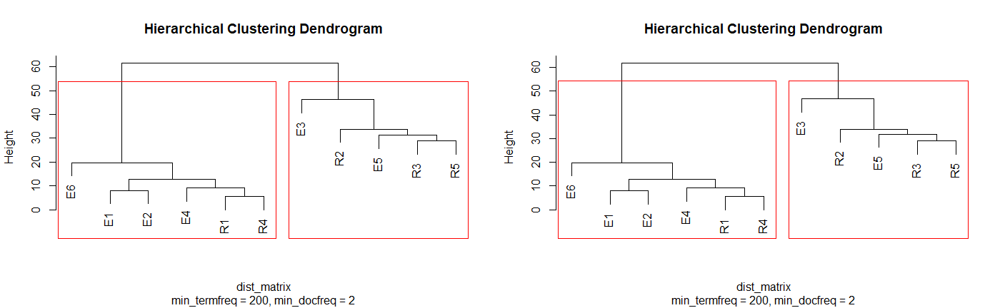
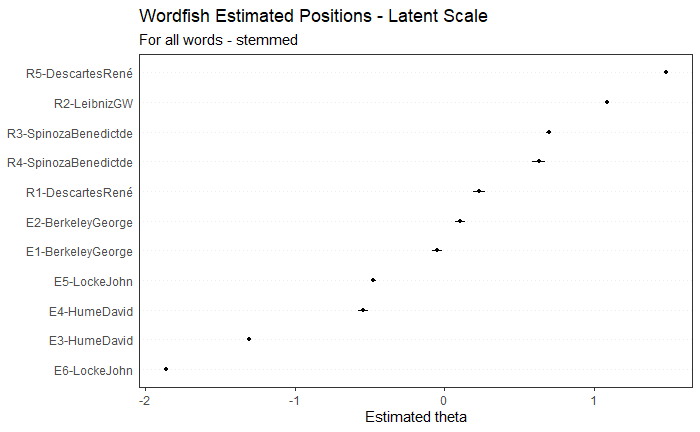
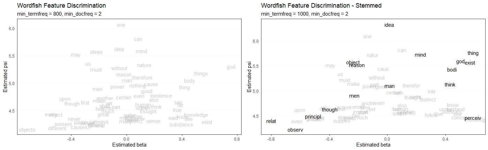

Exploring the Corpus - 2
Research Question
Why do people make certain assertions?
The research question, “Why do people make certain assertions?” aims to explore and understand how individuals, groups, or societies think about, acquire, and justify knowledge, including their beliefs about the nature of knowledge, truth, and evidence—what we’ll call “epistemic patterns.” These patterns can be identified by analyzing modern digital discourse from spaces such as social media, customer reviews, or debates. For example, when someone on social media says, “Vaccines are essential because clinical trials show they work”, they’re using an empiricist pattern. They trust evidence and real-world observations. On the other hand, someone who says, “Freedom of speech matters because it’s a natural right”, follows a rationalist pattern. They rely on logical reasoning and principles they believe are naturally true. By studying these patterns, we can better understand how people reason, what influences their beliefs, and how they persuade others.
The initial goal of this project is to build a reliable classifier that can identify the proportions of rationalism and empiricism in modern texts. Inspired by the Philosophy Data project (https://philosophydata.com/), which focuses broadly on identifying philosophical tendencies, this project is specifically interested in detecting epistemic tendencies and knowledge patterns. To achieve this, we’ll use transformer-based language models like BERT and RoBERTa. We might also experiment with GPT models, although they’re not primarily designed for classification tasks. These models are pre-trained on large-scale text data, and we’ll further fine-tune them on carefully annotated examples of rationalist and empiricist language to improve their accuracy and performance for our specific classification task.
To explore this research question, an initial corpus has been compiled using texts that explicitly discuss rationalism and empiricism. As a starting point, I’m using the corpus from the Philosophy Data Project (credits: https://philosophydata.com/bibliography.html), which includes works by key rationalist and empiricist philosophers. These texts are freely accessible through Project Gutenberg. Thanks to both Philosophy Data Project and Project Gutenberg for making my life easier :)
The book titles can be found in the previous blog.
These historical texts serve as a “ground truth” for identifying and labeling rationalist and empiricist language patterns, which I aim to generalize and detect in modern discourse in future phases of the project.
Exploratory Text Analysis
In this section, I tried to examine the word frequency distributions (unigrams) and phrase usage (n-grams) to explore the (latent) thematic differences that could possibly represent empiricism and rationalism.

In the first visualization, I tried to look at the words that are more common across the texts, but giving a bit of freedom in terms of word frequency, to create clusters using K-means. Texts like E1, E2, E4, E6 (empiricist), and R1, R4 (rationalist) are tightly packed together, suggesting similar lexicon usage patterns. Meanwhile, Hume’s Treatise of Human Nature (E3) appears more spread out, indicating greater variability in its vocabulary. I then tried to be permissive in terms of document coverage while increasing the threshold for word frequency but no notable changes were found in the clusters.

Next, I included unigrams, bigrams, and trigrams that appeared at least 10 times across 8 documents. With this richer representation, texts like R3 and R5 joined the central cluster alongside E1, E2, E4, E6, R1, and R4. However, this created more distance among E3, E5 and R2, likely because their phrase usage diverges more sharply from the rest. When I filtered to only high-frequency n-grams, the clusters reverted to looking more like the unigram-only model. This led me to think that maybe the multi-word expressions are less frequently shared across the corpus. Could phrases/ngrams actually be more useful for the classification process than just relying on words, as they provide better distinction?

The above dendrograms show results of hierarchical clustering based on the frequency of individual words and n-grams (1 to 3), respectively. These groupings reflect the same structure found in the K-Means models. Some empiricist and rationalist texts group together but others don’t, and that’s a bit surprising. Although we didn’t find distinct clusters, the results support how epistemic tendencies might be better understood as gradients rather than strict categories.
Let us see if Wordfish models can help us find something better!

Unlike clustering, which groups texts based on similarity, Wordfish estimates each document’s position along a latent dimension. Here, I used all stemmed words from the document-feature matrix (without trimming) to estimate these positions. What we see in the above image is a continuous scale that seems to align quite well with the epistemological divide we are interested in.
We find R5 and R2 sitting on the extreme right, given their strong rationalist leanings. R3, R4, and R1 follow closely behind. On the other side, E6, E3, E4, and E5 anchor the left side, representing empiricist tendencies. Interestingly, E1 and E2, written by the same author, show up closer to the middle, suggesting their language overlaps a bit more with the rationalist side than others in the empiricist group.
This smooth, ordered distribution is exactly the thing clustering struggled to reveal (Thanks to Wordfish). The wordfish results above support our argument that reasoning styles can fall along a spectrum rather than belonging to fixed groups.

The above plots show the wordfish feature discrimination: which words contribute the most to separating empiricist and rationalist texts along the latent dimension. The x-axis reflects how strongly a word influences a document’s position, while the y-axis reflects how frequently that word appears across the corpus.
Left side = more empiricist-weighted words; Right side = more rationalist-weighted words
In the first plot, words like “always”, “causes” and “much” appear closer to the left (empiricist-leaning?). On the right, words like “god”, “exist”, “thing”, “substance”, and “knowledge” (rationalist leaning).
Interestingly, some words like “idea” and “mind” show up toward the center (should prolly be used a lot by George Berkeley), implying their use across both traditions but (possibly) in different contexts.
Further Steps
Now that I have enough evidence from the above results to support my major assumptions: empiricists and rationalists have distinct linguistic patterns, and these patterns can be identified as proportions or along a spectrum rather than as pure classes. I’ll be moving forward to build classification models. Although I’m over-excited to explore the transformer-based models, I’ll start with traditional machine learning approaches such as SVM, Naive Bayes, and ensemble models, depending on time constraints.
Code and other supporting files can be found at: https://github.com/venkatx02/epistemic-analysis.github.io